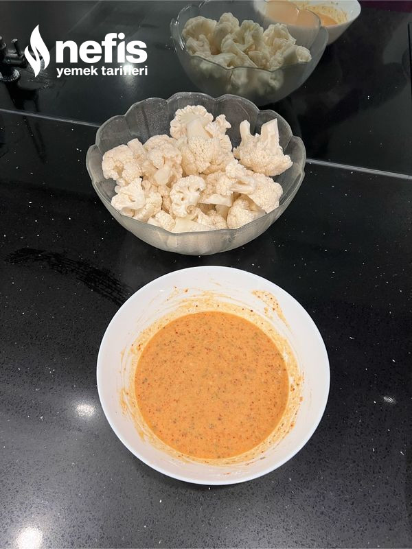
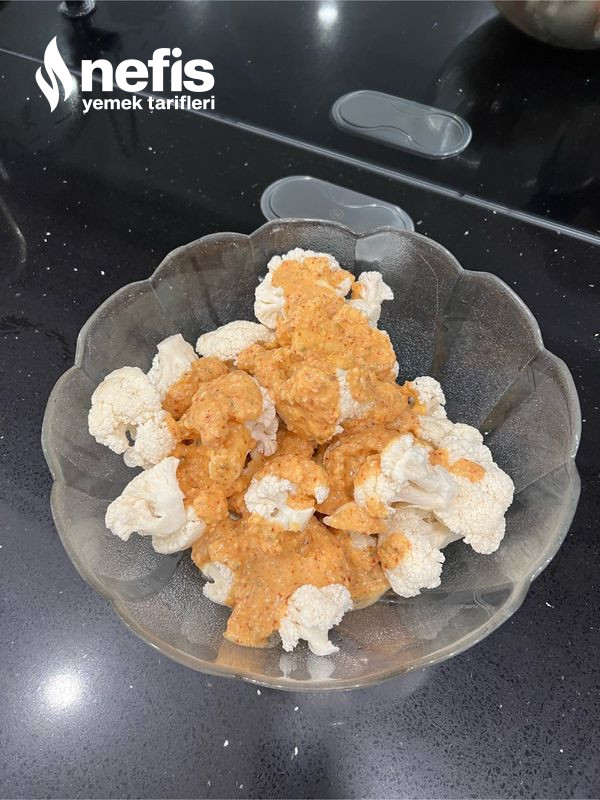
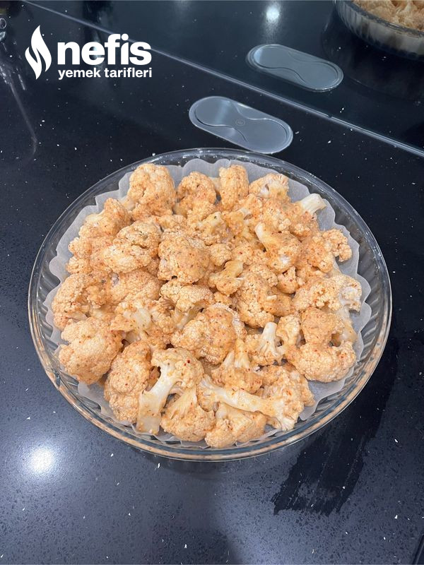
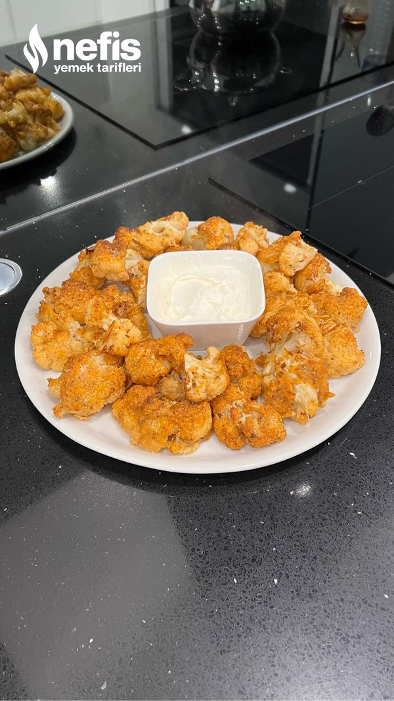

Anasayfaya Dön
Fırında Karnabahar
Fırında Karnabahar Tarifi İçin Malzemeler
- 1 orta boy karnabahar
- 1 şişe maden suyu
- 1 adet yumurta
- 1 yemek kaşığı un
- 2 yemek kaşığı galeta unu
- 2 yemek kaşığı mısır unu
- 3-4 yemek kaşığı zeytinyağ
- 4 adet fesleğen yaprağı
- 1 çimdik karabiber
- 1 tatlı kaşığı pul biber
Fırında Karnabahar Tarifi Nasıl Yapılır?
- Karnabaharı küçük parçalara ayırıp yıkayalım.
- Sos için tüm malzemeleri birlikte karıştırın.
- Ardından karnabaharı sosa bulayın. Yağlı kağıt serili fırın tepsisine dizin.
- Önceden ısıtılmış 200°c fırında pişirin.
- Ardından yoğurda batırıp tüketebilirsiniz.
Fırında Karnabahar Fotoğraflı Yapılışı
>



